<
PHYS S-12: Intro to Digital Fabrication PHYS S-12: Intro to Electronics
Class 7: Sensors
Input: Sensors
After class, I decided to try out the Adafruit HUZZAH32 – ESP32 Feather Board for my sensor tests rather than my reliable Adafruit METRO M0 Express. While it took a few minutes to adapt, I think I can now say that I'm mostly comfortable switching between the two microcontrollers.
Assignment #1: Measure a Physical Quantity & Calibrate Sensor
I chose this phototransistor as my sensor of choice. Specifically, this sensor is a "630nm radial phototransistor" for measuring visible light wavelengths (with peak sensitivity at 630nm).
I set up the circuit as shown using a slightly modified (75ms delay between reads) version of the default AnalogReadSerial program. I used a 1k and 10k Ohm for my first two attempts, but found that the sensor was hardly sensitive enough to measure for this exercise. Thus, I decided my calibration would implement a 330k Ohm resistor.
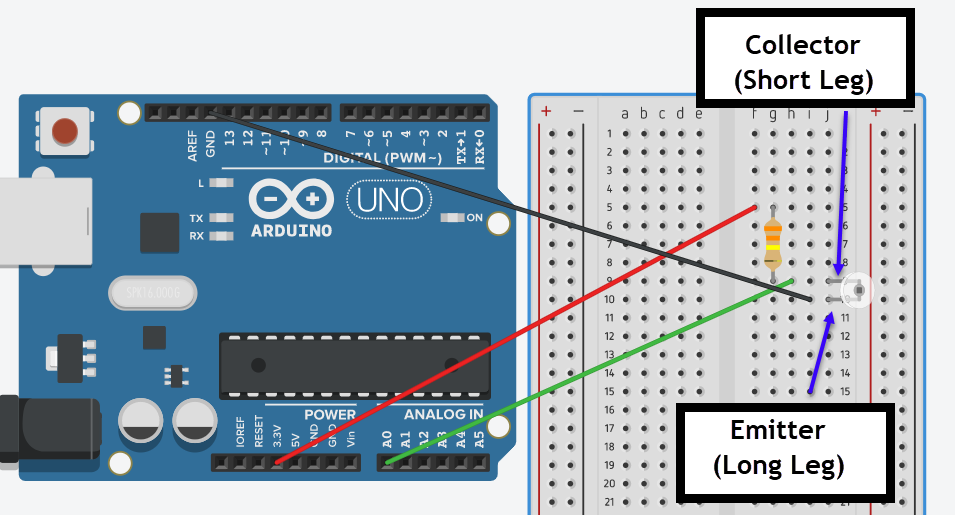
After creating a light "shield" out of a post-it note as shown below, I used the flashlight on my cellphone to expose the phototransistor to measurable and variable light. Below are my measurements. When plotting, I played with making the vertical axis scale logarithmic and linear.
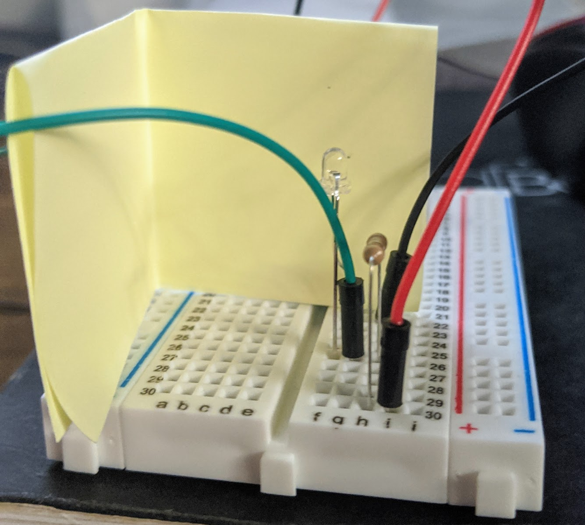
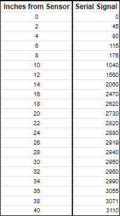
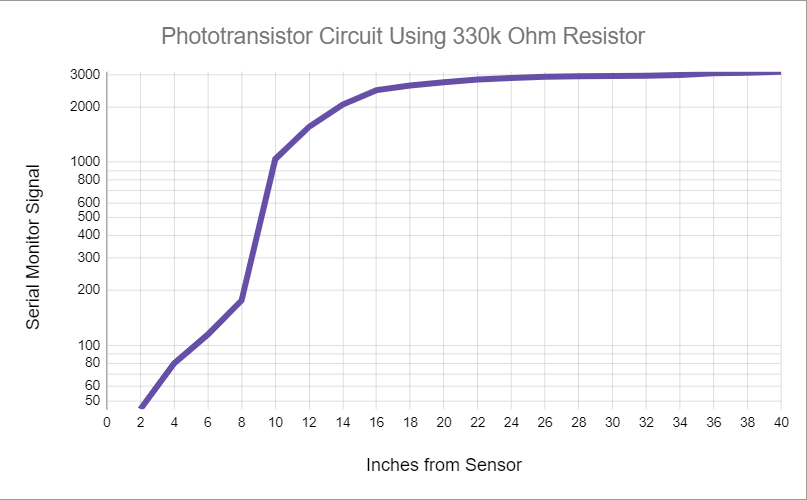
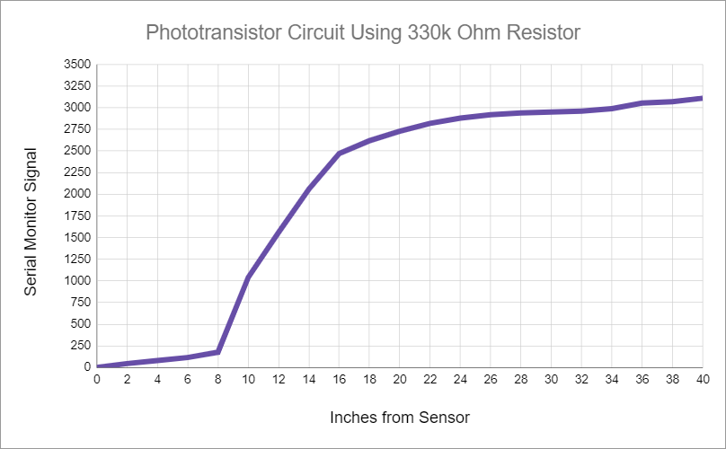
Afterwards, I tried a 10M Ohm resistor, but the baseline value without light was 500, so it was too sensitive to be useful.Given my findings, the output signal scale XXX; the relationship between light absorbed and serial monitor output was inverse. It ranged between 0 and 3110 and was most sensitive between 2-8"; I think the measurement is best conducted when the light source is 18" away from the sensor (or less). I attempted to use the map() function, but the results weren't helpful for plotting.
Assignment #2 DIY Sensor Construction + Calibration
First, I made a test sensor using velostat with two small pieces of copper tape adhered to each side of the velostat(without making contact with one another). I then sandwiched the two copper pieces and velostat between some green packing foam with hot glue. I attached alligator clips to the distal end of both copper pieces to connect one to GND and the other to A0. The analog pin A0 functioned here as a PULLUP because it sent out voltage. connected one to GND pieces of copperof the velostat with alligator clips connected to each. I used the Velostat sensor documentation and diagram below found here.
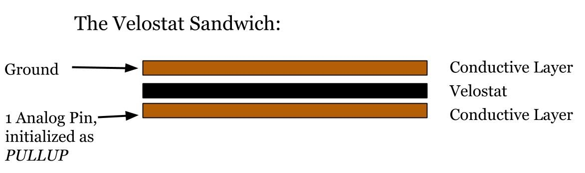
I created and set up my sensor as shown, but my results were less than optimal. The serial monitor and plotter did not indicate any changes with applied pressure, as the values hovered around 400.
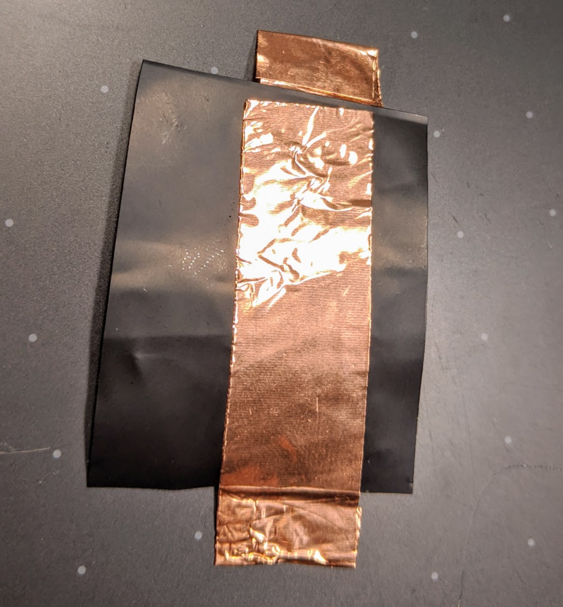
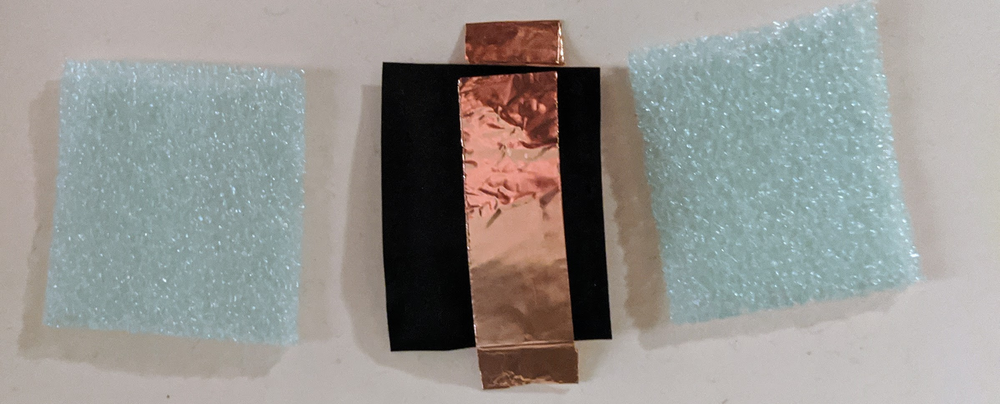
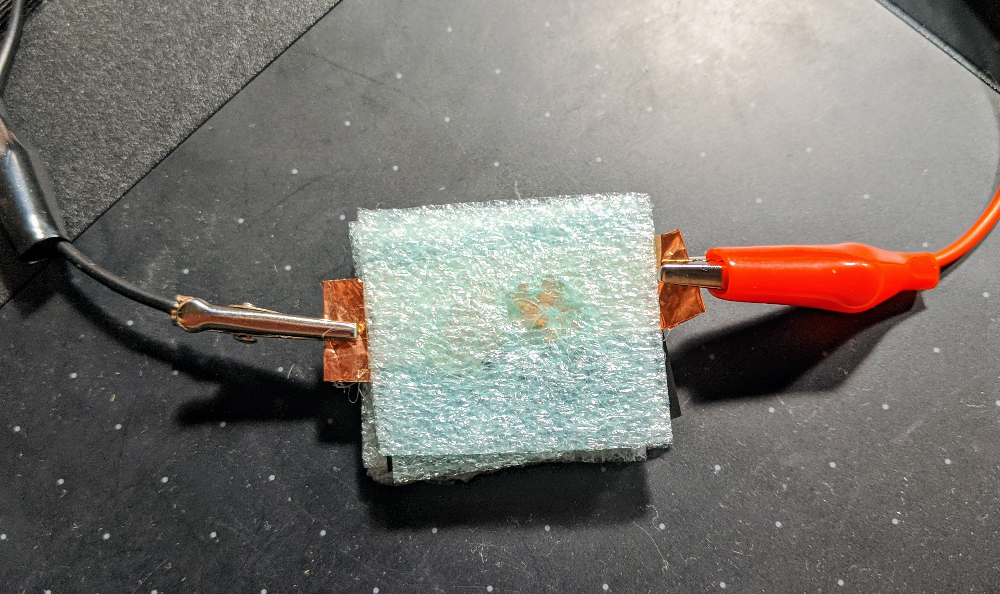
Attempt #2
I decided to try something else, as this sensor wasn't working as expected. I had some conductive thread laying about, so I placed a bit on electrical tape, applied it to both sides, and then attached the alligator clips. This also didn't work, so I think there may be something wrong with the velostat perhaps.
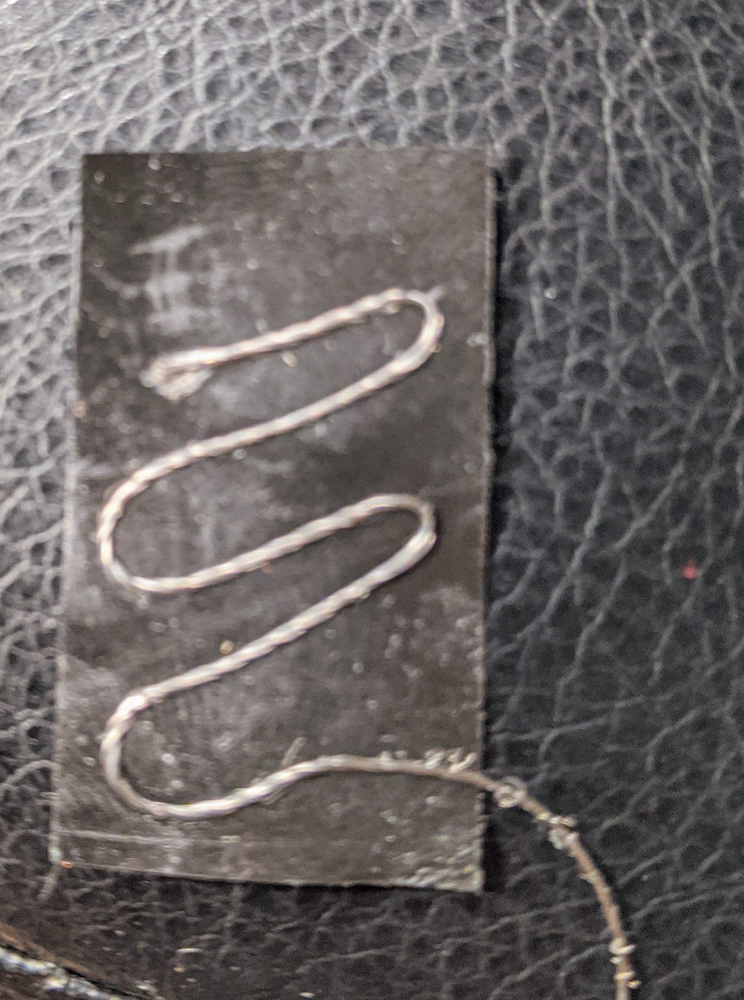
 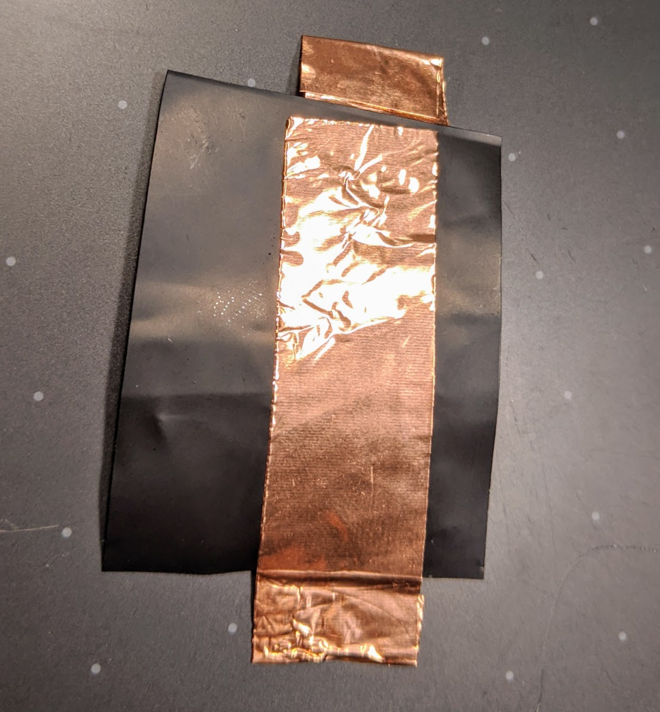
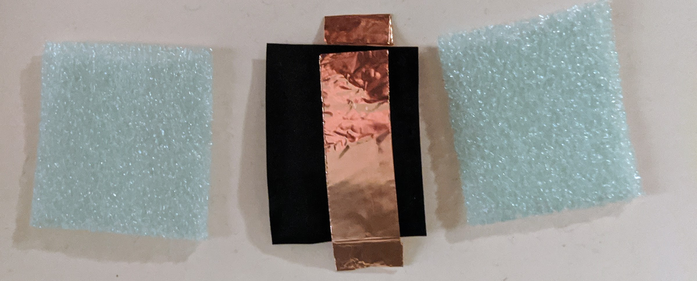
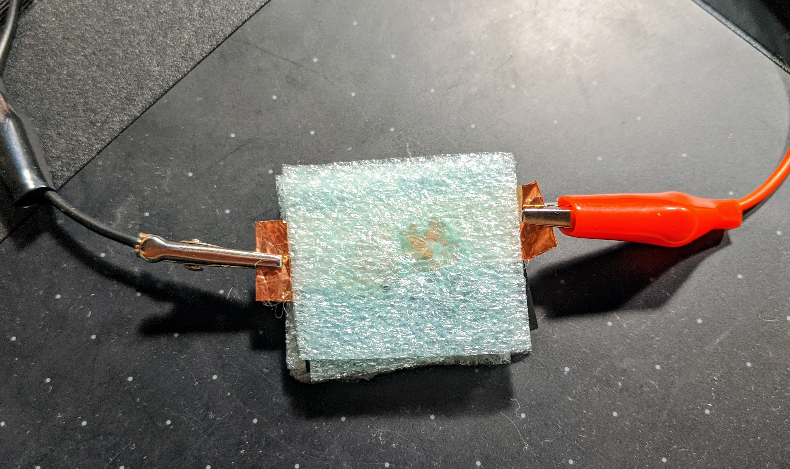
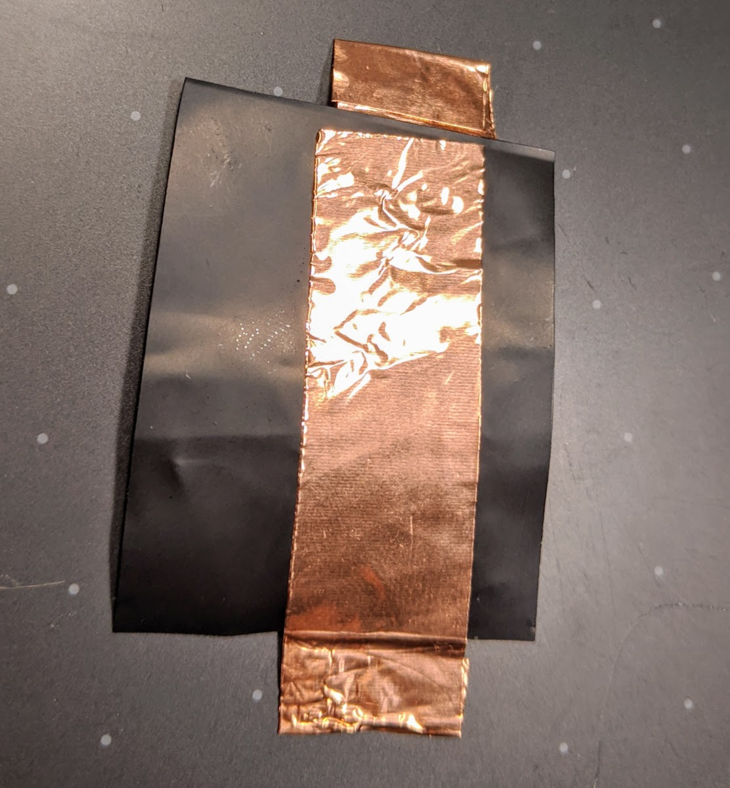
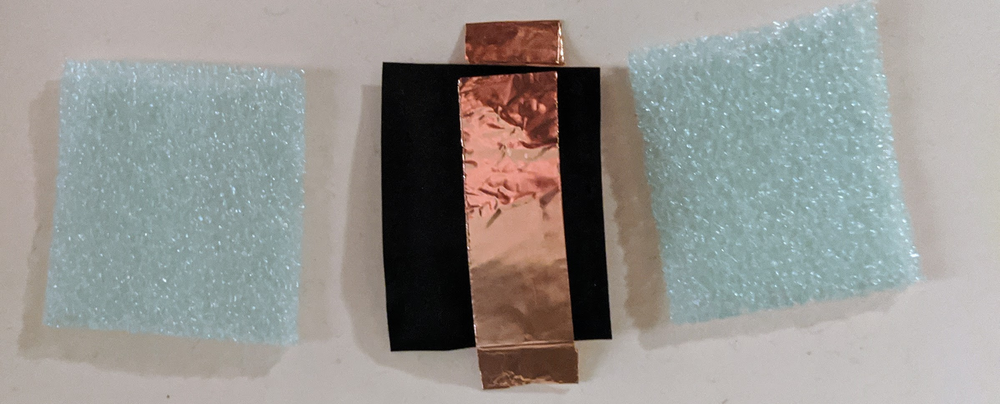
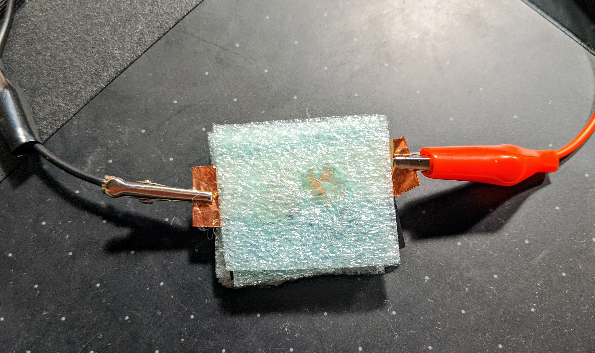